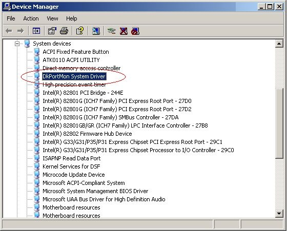
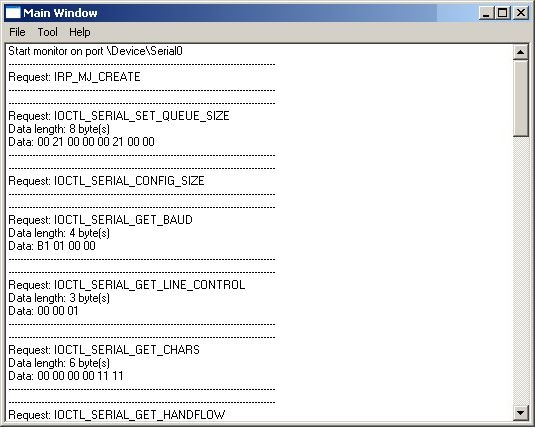

驱动过滤型串口监控开发
概要
串行端口监视器的基本思想是：创建系统驱动程序，然后向其添加过滤器驱动程序功能。
拦截I/O调用
NT设备驱动serial.sys处理COM端口通信。它在初始化时枚举所有可用的COM端口然后一一创建对应设备对象。这些设备对象都在NT Object Manager命名空间的子树\Device下创建.命名格式为Serialx(x为1, 2, 3等)。为方便用户态程序访问COM端口，serial.sys也在子树\??下创建符号链接名，命名格式如：COM1, COM2等。驱动不允许多个用户态程序同时打开一个端口。
API钩子：封装自定义的CreateFile(), WriteFile(), SetCommState()等接口的DLL，设法让程序调用你封装的程序。为实现DLL注入程序的地址空间（参见Jeffrey Richter的Advanced Windows），可以修改程序的外部链接表，执行你的封装DLL中去。封装DLL的接口在完成监控需求之后，仍然会访问原装版的接口。这种方法在WIN98或NT上都可运行，只能运行于用户态程序中，不需要管理员权限。但它比较难以实现。
过滤型驱动：附加该驱动到串口设备上，转发所有原串口需求，并拦截传送给监控程序。这种方法比较容易实现，因为使用的是MSDN文档中的方法，也比较有趣。
驱动源码分析
驱动的初始化与分发处理代码在sermon.h和sermon.cpp文件中。
驱动的内存管理和双向链接列表代码在drvclass.h和drvclass.cpp文件中。
驱动的设备驱动的主要实现类代码在devext.h和devext.cpp文件中。
驱动的版本信息在sermon.rc文件中。
驱动的驱动与用户态程序(通过条件编译区分)的通用结构体定义在sermonex.h文件中。
初始化
驱动的初始化是由sermon.cpp中的DriverEntry()接口完成的。CreateDevices()首先创建名为\Device\SerMon的自定义设备对象，和名为\??\SerMon的符号链接名。符号链接名用于用户态程序访问设备对象。如果出现异常，DriverEntry()返回一个非STATUS_SUCCESS的异常信息给I/O管理器。只要DriverEntry()一创建主设备对象，它就会填入到I/O管理器的DRIVER_OBJECT结构体中的主要接口句柄数组。过滤驱动需要处理各种本来会直接发给串口设备驱动的请求。
驱动实现两类设备，一种过滤请求并转发给串口设备驱动，一种提供相应接口，服务于用户态程序。所以可使用C++的继承关系来捕捉两种设备实现之间的共同信息。devext.h和devext.cpp定义了一个父类CDevice和两个派生类CAttachedDevice和CSERMONDevice，这样就可以有机会实现IRP处理宏接口。
sermon.h包含了两个由DriverEntry()存储在驱动对象主接口列表中的，声明与定义IRP接口的宏。
#define DECLARE_FUNCTION(x) extern "C" NTSTATUS \
SERMON##x (IN PDEVICE_OBJECT DeviceObject, IN PIRP Irp);
#define IMPLEMENT_FUNCTION(x) NTSTATUS \
SERMON##x (IN PDEVICE_OBJECT DeviceObject, IN PIRP Irp) \
{ \
return ((CDevice *) (DeviceObject->DeviceExtension))->x(Irp); \
}宏所生成的接口要求设备对象的DeviceExtension域包含一个指向CDevice派生对象的指针，以使用这个指针去调用相应的虚拟接口。这和把window信息映射到C++类的虚拟接口的技术很相似。对于每个请求类型，CDevice提供一个默认的简单完成请求并返回一个无错误状态码STATUS_SUCCESS的实现。
最后，DriverEntry()组成一个空白的链接列表，用于包含一些指向已创建或已附加的设备的指针。
与驱动通信
SerMon设备对象创建成功后，就可供用户态程序与过滤驱动进行通信。它实现了4种特殊的I/O控制请求，而用户态程序可以通过WIN32的DeviceIoControl()接口去访问。用户态程序可以通过调用CreateFile()来打开SerMon设备。
hDevice=CreateFile(_T("\\\\.\\SerMon"),
GENERIC_READ | GENERIC_WRITE | GENERIC_EXECUTE,
FILE_SHARE_WRITE | FILE_SHARE_READ,
NULL,
OPEN_EXISTING,
FILE_ATTRIBUTE_NORMAL | FILE_FLAG_OVERLAPPED,
NULL);CreateFile()返回一个句柄，可供用户态程序传递进DeviceIoControl()指令，然后就可传入传出数据缓冲等。
BOOL res=DeviceIoControl(hDevice,
IOCTL_SERMON_STARTMONITOR,
(PVOID) (LPCTSTR) s,
(s.GetLength()+1)*sizeof(WCHAR),
&handle;,sizeof(MHANDLE),
&dw;,
NULL);当用户态程序调用DeviceIoControl(), 控制devext.cpp中的CSERMONDevice::IoControl()的传输事件。这个接口可以接受传入指令并进行检查以决定如何处理请求。sermonex.h中定义了4种指令。如下：
IOCTL_SERMON_STARTMONITOR. 把本指令传入DeviceIoControl()接口，就可以开始监听一个设备，入参是一个过滤驱动所附加到的设备的Unicode字符名。名称格式为\Device\Serialx或\??\COMx, 其中表示串口编号。在执行本附加指令时，设备必须处于尚未打开状态，否则会返回一个STATUS_ACCESS_VIOLATION的异常状态码.
本指令返回一个指向新创建的C++CAttachedDevice类型对象的指针MHANDLE。用户态程序在之后调用DeviceIoControl()指定监控对话时，必须把该指针句柄传入。
IOCTL_SERMON_STOPMONITOR. 把本指令传入DeviceIoControl()接口，就可以停止监听会话。必须要把上一个IOCTL_SERMON_STARTMONITOR指令所返回的指针句柄MHANDLE传入。
IOCTL_SERMON_GETINFOSIZE. SerMon会产生指定长度的数据流供用户态程序解析与显示。传入本指令和会话指针句柄MHANDLE，可以获得下一个传输队列的数据长度。返回一个DWORD类型的缓冲数据字节长度。
IOCTL_SERMON_GETINFO. 只要你获得了传输队列中的下一个事件的数据流长度，你就可以使用本指令来复制数据到用户态程序的缓存中。入参包括会话指针句柄MHANDLE 和一个容量不小于上述缓冲数据长度的缓存区.
附加到串口设备
当用户态程序传入IOCTL_SERMON_STARTMONITOR以调用DeviceIoControl()时，该事件会执行一个对devext.cpp中的CSERMONDevice::IoControl()的调用。后者接口会传入目标设备名称参数到CSERMONDevice::TryConnectToSerialDevice()，后者合伙调用全局的Attach()接口
Attach()首先调用IoGetDeviceObjectPointer()尝试寻找并打开目标设备，后者会返回一个指向设备对象及其对应文件对象的指针。此处不需要文件对象，所以可以在接口末尾调用ObDereferenceObject()来释放它。然后，Attach()会创建一个未命名的设备对象，并把一个指向新创建的CAttachedDevice对象的指针存储在它的device extension扩展设备域中。之后由于该对象未准备好接收驱动请求，Attach()会锁定该CAttachedDevice对象。
接下来，Attach()调用IoAttachDeviceByPointer()把新创建的设备附加到目标设备中去。I/O管理器会在该设备的DEVICE_OBJECT结构中填入所有必填信息，使之能够处理与转发其他设备的请求。简单地说，该设备对象就被标记为可处理可缓存的I/O类型。幸运的是，串口设备驱动本身和大多其它类似驱动都可使用这种类型的I/O。
上述操作成功后。Attach()解锁CAttachedDevice对象，以使其可以接收请求并返回给用户态程序一个MHANDLE(typedef中定义是DWORD)的指针，其指向其已创建的CAttachedDevice对象的指针。为了尽量区分真实句柄和假货，驱动会在指定内存地址读取数据并验证其数据签名。
CAttachedDevice
CAttachedDevice类在devext.h中声明。每个CAttachedDevice对象包含两个列表。一个事件列表和一个请求列表。这些列表是FIFO的双向链接列表，通过CAttachedDevice中的CDBLinkedList辅助模板类来实现。
在CAttachedDevice中, Signature域用来二次检查用户态程序是否传入了一个有效的MHANDLE指针(指向CAttachedDevice).eres域是一个ERESOURCE变量，用于锁定和解锁整个CAttachedDevice设备。这个类还包含了一个KEVENT类型的动态事件，并在其构造器中调用KeInitializeEvent()对其初始化。这个事件很重要。当开发驱动时，当串口被某些应用占用打开时，如果从串口设备分离并卸载过滤驱动，下一个请求就会引发NT产生一个BS0D(Blue Screen Of Death)蓝屏。所以必须在分离与卸载过滤驱动之前，保证所有的用户态甚至内核态程序都释放对该串口的占用。这就是使用Num和bFirstTime域的目的了。
CAttachedDevice::Num域包含设备被打开的次数，串口只能被打开一次(其他可监听的设备可能可以被多次打开如USB口)。因为代码会忽略初始打开的IRP，所以CAttachedDevice::bFirstTime在构造器阻止关闭句柄(devext.cpp中的CloseCompletion())对Num减值时，，被设置为TRUE。当Num为0或大于0时，CloseCompletion()会相应分别设置该事件为signaled或non-signaled状态。这就使得在销构器中对KeWaitForSingleObject()的调用会等待串口被关闭。
CAttachedDevice初始化所有这些域，并把自身插入到内部驱动的指向CAttachedDevice对象(DriverEntry()中创建)的指针链接列表中去，这样可以保证驱动的卸载干净。
附加操作之后，驱动立即准备就绪开始监听。每个原发往串口设备的请求会被被I/O管理器转发往已附加的过滤驱动，该请求会被分发往对应的CAttachedDevice中的虚拟接口。
驱动监控程序只有打开、关闭、写入，读取和I/O这几种控制请求。此外，它会忽略那些串口设备返回不成功状态信息的请求。收到IRP请求后会调用CAttachedDevice::Standard()，并且传入一个指向完成请求执行的对应程序的当前I/O栈位置的指针。CAttached::Standard()复制当前栈位置到下一步，并使用IoSetCompletionRoutine()宏设置IRP的完成执行程序。在位元复制之后，下一个栈位置将会在其CompletionRoutine域包含和当前栈同样的信息。如果目标驱动之上有多个驱动层，它就会引发对同个接口的多次调用，结果无法预料。由此安全的做法就是总是只指定一个完成执行的程序。如果是一些驱动不需要指定完成指定程序的(如清缓存和清理请求)，它会注册DefaultCompletion()为完成执行的默认程序。DefaultCompletion()不执行任何操作，仅返回STATUS_SUCCESS成功状态给I/O管理器。
主要的处理动作代码在ReadCompletion(), WriteCompletion(), OpenCompletion(), CloseCompletion()和IOCompletion()接口内。如果请求成功了，它们会构建一个新的IOReq类型对象，填满必填的信息，然后调用CAttachedDevice::New()。CAttachedDevice::New()会先锁定CAttachedDevice对象，以防止内部事件列表不一致，然后把最新创建的IOReq对象添加到当前事件列表的末尾。
事件列表存储了串口请求的信息，供调用程序提取使用。但是，来自调用程序的IOCTL_SERMON_GETINFOSIZE和IOCTL_SERMON_GETINFO也可能被存储在一个链接列表即请求列表中。当调用程序发送IOCTL_SERMON_GETINFOSIZE或IOCTL_SERMON_GETINFO请求时，如果事件列表是空的，请求会被标记为pending等待审核状态并存入请求列表的末尾。当CAttachedDevice::New()在列表末尾添加了一个新的IOReq对象之后，它同时会检查请求列表。如果已存在pending等待审核的请求，那么CAttachedDevice::New()继续调用ProcessSize()或ProcessNext()执行请求。这些函数提取解析事件列表最顶部的请求并完成执行，再从请求列表中删除。(ProcessNext()也会删除事件列表最顶部的事件)
停止监听
当程序发送一个IOCTL_SERMON_STOPMONITOR请求之后，驱动简单地删除CAttachedDevice对象。所有操作在该对象的销构器中完成。CAttachedDevice::~CAttachedDevice()先先改变signature签名域，这样如果又有对原句柄的调用发生，就会返回一个无效指针信息。然后引发前述等待事件，直到端口关闭。然后从设备中分离并删除过滤驱动。然后，所有搁置的IRP都被执行完成，返回以STATUS_CANCELLED。最后，返回结果给用户态程序。
控制程序
控制程序通过SerMon驱动来监听串口。它采用MFC的MDI界面，允许用户同时监听多个串口。程序启动时，会先通过传入参数\\.\SerMon来调用CreateFile()打开SerMon设备驱动，如果驱动不能成功打开(可能是因为驱动尚未安装)，程序会先尝试使用便捷的SCCM(service control manager)来安装驱动。
当你选择开始监听的菜单项后，程序会弹出小窗询问你选择哪个端口，选择之后，程序会创建一个新的文档/视图窗体，窗体包括上下两个读入字节和写入字节的监听文本框。打开，关闭和I/O控制请求都在两个文本框中显示。
程序向驱动发送IOCTL_SERMON_STARTMONITOR请求，然后获得监听会话的句柄。然后它创建一个并行线程，循环处理IOCTL_SERMON_GETINFOSIZE和IOCTL_SERMON_GETINFO两种请求，使用OVERLAPPED结构体来调用DeviceIoControl()引发处理异步I/O。当线程接收到数据时，它会发送一个信息给视图窗体，窗体会显示该数据供用户监控。
当你选择停止监听菜单项时，或直接关闭视图，程序先向用户弹出一个“请先关闭所有占用串口的程序”的警告提示信息后，就向驱动发送一个IOCTL_SERMON_STOPMONITOR请求。
结论
创建一个过滤驱动是监听NT串口的优雅解决方案，它还可以扩展到监听几乎所有内核模式的设备驱动。例如监听你调试中的一个驱动的IRP流。串口监听程序只是NT的可扩展设备驱动框架的应用之一。
这是一个精简系统驱动程序，没有真正的硬件，实现了系统驱动程序的最简化的调度处理功能(完整系统驱动程序的要求请查看MSDN)。程序使用WDK建议的“标准PnP和电源分派处理(standard PnP and Power dispatch handling)”，作为默认处理程序,将发送到此驱动程序的IRP转发给较低级别的驱动程序。负责处理打开Open，清理Clean up，关闭Close，读取Read和控制Control请求，并处理另外一些请求，如在WDK（Window Driver Kits）中串行端口驱动程序IRP处理程序的请求。
加入Attach和分离Detach目标设备
客户端发出附加到目标设备的请求(IOCTL_DKPORTMON_ATTACH_DEVICE + 串口名称字符串参数)时，驱动开始执行如下步骤：
sermon.h (Listing 1) contains two macros used to declare and define IRP functions that DriverEntry() stores in the driver object’s major function table:
#define DECLARE_FUNCTION(x) extern "C" NTSTATUS \ SERMON##x (IN PDEVICE_OBJECT DeviceObject, IN PIRP Irp); #define IMPLEMENT_FUNCTION(x) NTSTATUS \ SERMON##x (IN PDEVICE_OBJECT DeviceObject, IN PIRP Irp) \ { \ return ((CDevice *) (DeviceObject->DeviceExtension))->x(Irp); \ }
The functions that these macros generate expect that the DeviceExtension field of the device object contains a pointer to a CDevice-derived object, and they use that pointer to invoke the appropriate virtual function. This is similar to techniques for mapping window messages onto C++ class virtual functions. For each request type, CDevice supplies a default implementation that simply completes the request and returns a non-error status code, STATUS_SUCCESS.
Finally, DriverEntry() constructs an empty linked list that will eventually contain pointers to created attached devices. DriverEntry() then returns STATUS_SUCCESS.
驱动通过设备名入参去获取原顶层设备对象，即执行IoGetDeviceObjectPointer()获得目标设备指针。
驱动创建一个新的设备对象，扩展大小为0。
驱动复制原顶层设备对象的所有标志Flags,还可以加入自定义的标志。
执行IoAttachDeviceToDeviceStack()，附加到新的设备对象中，并设置初始化标志。
附加到设备的源码如下(完整版见DkIoExt.c中的DkCreateAndAttachDevice()函数)：
...
RtlInitUnicodeString(&usTgtDevName,
(PCWSTR) pIrp->AssociatedIrp.SystemBuffer);
ntStat = IoGetDeviceObjectPointer(&usTgtDevName,
GENERIC_ALL,
&pFlObj,
&pTgtDevObj);
if (!NT_SUCCESS(ntStat)){
DkDbgVal("Error get device object pointer!", ntStat);
return ntStat;
}
ObDereferenceObject(pFlObj);
ntStat = IoCreateDevice(pDevEx->pDrvObj,
0,
NULL,
pTgtDevObj->Characteristics,
FILE_DEVICE_SECURE_OPEN,
FALSE,
&pDevEx->pTgtDevObj);
if (!NT_SUCCESS(ntStat)){
DkDbgVal("Error create target device object!", ntStat);
goto EndFunc;
}
pDevEx->pTgtDevObj->Flags |= (pTgtDevObj->Flags &
(DO_BUFFERED_IO | DO_POWER_PAGABLE | DO_DIRECT_IO));
pDevEx->pTgtNextDevObj = NULL;
pDevEx->pTgtNextDevObj = IoAttachDeviceToDeviceStack(pDevEx->pTgtDevObj,
pTgtDevObj);
if (pDevEx->pTgtNextDevObj == NULL){
DkDbgVal("Error attach device to device stack!", ntStat);
ntStat = STATUS_UNSUCCESSFUL;
goto EndFunc;
}
pDevEx->pTgtDevObj->Flags &= ~DO_DEVICE_INITIALIZING;
...当客户端程序发送一个从目标设备分离的请求(IOCTL_DKPORTMON_DETACH_DEVICE)时，驱动从目标设备分离并删除其创建的设备对象。代码如下：
...
if (pDevEx->pTgtNextDevObj){
IoDetachDevice(pDevEx->pTgtNextDevObj);
pDevEx->pTgtNextDevObj = NULL;
}
if (pDevEx->pTgtDevObj){
IoDeleteDevice(pDevEx->pTgtDevObj);
pDevEx->pTgtDevObj = NULL;
}
...处理IO请求
附加到目标设备后，驱动除了自身收到的IO请求之外，还要处理目标设备收到的IO请求。因为驱动位于目标设备的堆栈Stack的顶层，所以发往该设备的请求会先发往我们的驱动。如果判断IO请求的真实地址呢？最简单的办法是使用目标设备对象的全局变量，在DkAddDevice()中创建该对象，那么在收到IO请求时就能使用如下一个if做个简单的判断：
...
extern PDEVICE_OBJECT g_pThisDevObj;
...
NTSTATUS DkCreateClose(PDEVICE_OBJECT pDevObj, PIRP pIrp)
{
...
if (pDevObj != g_pThisDevObj)
return DkTgtCreateClose(pDevExt, pIrp);
...处理对新驱动设备对象的IO请求
驱动使用两种队列，一个是处理IRP(Cancel-Safe queue as WDK suggested)的队列，一个是收集数据的FIFO先入先出队列(simple First In First Out data queue / FIFO data queue)。
驱动负责处理打开Open(IRP_MJ_CREATE)，清理Clean up(IRP_MJ_CLEANUP)，关闭Close(IRP_MJ_CLOSE)，读取Read(IRP_MJ_READ)和控制Control(IOCTL_DKPORTMON_ATTACH_DEVICE和IOCTL_DKPORTMON_DEATCH_DEVICE)请求，打开、关闭和清理请求在同一个dispatch分离过程DkCreateClose()中处理。对打开请求，驱动初始化FIFO数据队列，成功完成后返回一个STATUS_SUCCESS；对于清理请求，驱动从目标设备(前提是该设备存在)分离，清除数据队列和 Cancel-Safe撤销安全对列，成功完成请求后返回一个STATUS_SUCCESS。
对于读取请求，驱动先从FIFO先入先出队列读取数据，如果数据存在，就复制数据到系统中的用户缓存中去，然后移除/摧毁/删除/释放数据，成功完成后返回一个STATUS_SUCCESS和从FIFO队列中获得数据的长度。如果数据不存在，就把IRP暂存到Cancel-Safe队列，返回一个Pending等待处理状态，这表示该IRP已暂存进队列，稍后将由驱动的另外一个函数DkTgtCompletePendedIrp()来完成请求。文件DkIoReq.c中函数DkReadWrite()代码如下：
...
pQueDat = DkQueGet();
if(pQueDat == NULL){
IoCsqInsertIrp(&pDevExt->ioCsq, pIrp, NULL);
IoReleaseRemoveLock(&pDevExt->ioRemLock, (PVOID) pIrp);return STATUS_PENDING;
} else {
pDat = (PDKPORT_DAT) pIrp->AssociatedIrp.SystemBuffer;
RtlCopyMemory(pDat, &pQueDat->Dat, sizeof(DKPORT_DAT));
DkQueDel(pQueDat);
IoReleaseRemoveLock(&pDevExt->ioRemLock, (PVOID) pIrp);
DkCompleteRequest(pIrp, ntStat, (ULONG_PTR) sizeof(DKPORT_DAT));return ntStat;
}
...对于控制请求，参见前述“加入Attach和分离Detach目标设备”章节内容。
处理针对目标设备的IO请求
对于发往目标设备的IO请求，过滤型驱动一般会转发往更底层的目标设备对象。驱动监控功能还需要对往来数据进行收集。问题在于数据采集的时间点是在转发前还是转发后？首先要确定数据的传送方向，就是IO请求是GET请求(for example, IRP_MJ_READ, IOCTL_SERIAL_GET_BAUD_RATE, and so on)还是PUT请求，GET请求的数据是目标设备发出，这时驱动就要在目标设备完成请求之后采集数据，即在GET请求上设置一个completon完成后动作，该动作在底层目标设备驱动完成请求后执行。如下，文件DkIoReq.c中，当驱动收到一个发往目标设备的IRP_MJ_READ请求时，DkTgtReadWrite()执行该请求，该函数设置了一个完成后动作，然后转发IO请求到底层目标设备去。
...
IoCopyCurrentIrpStackLocationToNext(pIrp);
IoSetCompletionRoutine(pIrp,
(PIO_COMPLETION_ROUTINE) DkTgtReadCompletion,
NULL,
TRUE,
TRUE,
TRUE);
return IoCallDriver(pDevExt->pTgtNextDevObj, pIrp);
...在完成阶段，可以通过DkTgtCompletePendedIrp()函数收集数据，如下：
...
pDevExt = (PDEVICE_EXTENSION) g_pThisDevObj->DeviceExtension;
pIrp = IoCsqRemoveNextIrp(&pDevExt->ioCsq, NULL);
if (pIrp == NULL){
DkQueAdd(szFuncName, ulFuncNameByteLen, pDat, ulDatByteLen);
} else {
pNewDat = (PDKPORT_DAT) pIrp->AssociatedIrp.SystemBuffer;
RtlFillMemory(pNewDat, sizeof(DKPORT_DAT), '\0');
pNewDat->FuncNameLen = ulFuncNameByteLen;
pNewDat->DataLen = ulDatByteLen;if(szFuncName != NULL){
RtlCopyMemory(pNewDat->StrFuncName, szFuncName, ulFuncNameByteLen);
}if (pDat != NULL){
RtlCopyMemory(pNewDat->Data, pDat, ulDatByteLen);
}
pIrp->IoStatus.Status = STATUS_SUCCESS;
pIrp->IoStatus.Information = sizeof(DKPORT_DAT);
IoCompleteRequest(pIrp, IO_NO_INCREMENT);
}
...对于发往目标设备的控制型IO请求，处理方法同上，关键也是要注意数据的方向。
.客户端程序
客户端程序打开设备驱动并开始监控。在新的循环线程中采集数据。新数据到达时会触发事件，执行绑定的程序。参见文件DkPortClient.h和DkPortClient.cpp中的CDkPortClient类。启动监控时，客户端程序发送IOCTL_DKPORTMON_ATTACH_DEVICE指令到驱动中；停止监控时，发送IOCTL_DKPORTMON_DETACH_DEVICE
缺点
必须要先启动监控，再打开串口，因为每个物理串口只能打开一次。
无法保证IO请求的时序。
如一些应用程序使用overlapped重叠标志来打开端口，然后异步读取端口，然后写入端口，再等待来自先前读取请求的传入数据，在监控端收到的数据次序可能如下：
... IRP_MJ_CREATE ... IRP_MJ_WRITE ... IRP_MJ_READ ...
IRP_MJ_WRITE数据直接在IRP_MJ_CREATE之后就到达了，因为驱动忽略了IRP state，只是纯粹的数据转发。
驱动对发往目标设备的IO请求的成功/失败状态不做判断
安装
此驱动程序仅支持Windows XP x86。 如果在除Windows XP之外的其他平台上使用此功能，则需要在所需目标下重新编译它。 因此，下面的此过程仅适用于Windows XP。
逐步安装驱动程序：
在“控制面板”中，双击“添加硬件”，然后单击“下一步”，这将显示“搜索硬件”对话框。
“搜索硬件”对话框完成后，单击单选按钮“是，我已连接硬件”，然后单击“下一步”。
在“已安装的硬件”列表框中，向下滚动并选择/单击“添加新硬件设备”，然后单击“下一步”。
选择/单击“安装我从列表中手动选择的硬件（高级）”单选按钮，然后单击“下一步”。
在“通用硬件类型”列表框中，选择/单击“系统设备”，然后单击“下一步”。
单击“从磁盘安装”按钮，然后找到文件DkPortMon2.inf ，然后单击“下一步”。
再次单击Next以完成驱动程序安装。
如果驱动程序已成功安装，则设备管理器应如下所示：

使用
只需在Bin目录中运行名为“ DkPortMonGui.exe ”的程序即可 。 首先，您需要选择要监控的端口，方法是单击工具 - 选择端口 ，选择它，然后单击工具 - 开始开始监控端口。 如果要查看来自驱动程序的一些调试消息，请使用SysInternals中的DbgView。

源代码编译和链接源
源码由两部分组成，驱动源本身和客户端程序。 安装WDK，然后单击开始 -> WDK xxx-xxxxxx-x -> Build Environment -> Windows XP -> x86 Checked Build Environment 。 这将为您提供命令行提示环境（checked build environment / debug build for x86 machine）以编译源码。Enter each directory and then type build -cegZ to compile and link the source. This method is valid for Windows XP with "Debug build" environment.
注意
PS:一个问题
ObDereferenceObject(KS_FileObj);
万一这时候，串口正好被拔下来了，然后你def一下，就爆炸了。
PS2:
另一个问题是兼容性
https://msdn.microsoft.com/zh-tw/library/windows/hardware/ff548236
中说了IoAttachDeviceToDeviceStackSafe 的支持是这样子的
This routine is available on Update Rollup for Windows 2000 Service Pack 4 (SP4) and on Windows XP and later.
参见
《Windows内核安全与驱动开发》
读书笔记：[原创]windows内核编程之[串口过滤]-『编程技术』-看雪安全论坛MFC串口调试助手线程监听事件小解- CSDN博客,貌似API HOOK监听
A Serial Port Spy for NT | Dr Dobb's：sermon.sys开发讲解
Simple Serial Port Monitor - CodeProject
驱动式监听，BradenCalderMurphy/DkPortMon-64位vs2015版Here is a tried and tested way of signing the .sys and .cat files on a 64bit Windows Vista or higher system: http://www.rage3d.com/board/showthread.php?t=33920573
Serial driver for Pocket PC - CodeProject，是用EVC开发的，用于wince下的串口驱动源码
Win32 Commport SniffingThis is how my program that can control the values returned by GetTickCount() in another program works (see here http://www.lenholgate.com/blog/2006/04/tickshifter-v02.html)
HookComm 和 Portmon 的源码.两个都是通过Hook监视串口通讯的程序， HookComm在编程沙龙(http://member.netease.com/~inetsoft/index.htm)上有，可我不是会员下不到。 Portmon是 www.sysinternals.com 的开放程序，可是这个站关闭了。